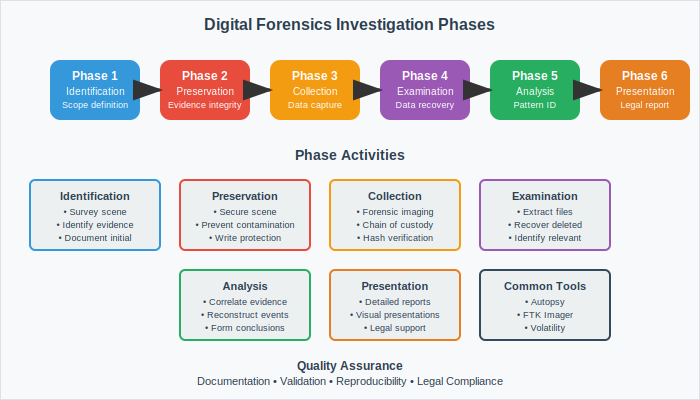

Cyber Forensics
Digital Investigation and Evidence Analysis

What is Cyber Forensics?
Cyber Forensics: The application of scientifically proven methods to preserve, collect, validate, identify, analyze, interpret, document, and present digital evidence from digital sources for facilitating or furthering the reconstruction of events.
- Scientific Approach: Evidence-based methodology
- Legal Admissibility: Maintaining chain of custody
- Technical Expertise: Specialized tools and knowledge
- Multi-disciplinary: Law, technology, and investigation
Types of Digital Forensics
Computer Forensics
- Hard drive analysis
- File system examination
- Registry analysis
- Memory forensics
Network Forensics
- Packet capture analysis
- Log file examination
- Traffic pattern analysis
- Intrusion investigation
Mobile Forensics
- Smartphone data extraction
- App data analysis
- Call and message logs
- Location data recovery
Cloud Forensics
- Remote data acquisition
- Multi-tenant analysis
- API-based investigation
- Distributed evidence
Digital Forensics Process
Standard Investigation Process:
- Identification: Recognize and document potential evidence
- Preservation: Secure and protect evidence from alteration
- Collection: Gather evidence using forensically sound methods
- Examination: Process and extract relevant information
- Analysis: Interpret findings and draw conclusions
- Presentation: Document and present results
Chain of Custody Requirements:
• Who collected the evidence
• When was it collected
• Where was it found
• How was it collected and stored
• Who has had possession of the evidence
Types of Digital Evidence
Volatile Evidence
- System memory (RAM)
- Running processes
- Network connections
- Cached data
- Temporary files
Non-Volatile Evidence
- Hard drive contents
- USB devices
- Log files
- Database records
- Email archives
Order of Volatility (RFC 3227):
- Registers, cache
- Routing table, ARP cache, process table, kernel statistics
- Memory
- Temporary file systems
- Disk
- Remote logging and monitoring data
- Physical configuration, network topology
- Archival media
Forensic Tools and Technologies
Commercial Tools
- EnCase Forensic
- FTK (Forensic Toolkit)
- Cellebrite UFED
- X-Ways Forensics
- Magnet AXIOM
Open Source Tools
- Autopsy
- Volatility Framework
- SIFT Workstation
- Sleuth Kit
- Wireshark
Hardware Tools:
• Write blockers for evidence preservation
• Forensic duplicators for bit-by-bit copying
• Mobile device extraction hardware
• Memory acquisition devices
• Network taps for live monitoring
Legal Framework and Standards
Key Legal Considerations:
- Admissibility: Evidence must meet legal standards
- Authentication: Prove evidence is what it claims to be
- Best Evidence Rule: Original evidence preferred over copies
- Chain of Custody: Document evidence handling
- Privacy Rights: Respect constitutional protections
International Standards
- ISO/IEC 27037 - Digital Evidence Guidelines
- ISO/IEC 27041 - Investigation Assurance
- NIST SP 800-86 - Computer Forensics Guide
- RFC 3227 - Evidence Collection Guidelines
Court Requirements
- Daubert Standard for scientific evidence
- Federal Rules of Evidence
- Expert witness qualifications
- Technical documentation standards
Data Acquisition Methods
Physical Acquisition
- Bit-by-bit copy of entire device
- Includes unallocated space
- Most comprehensive method
- Time-intensive process
Logical Acquisition
- Copy of file system structure
- Faster than physical acquisition
- May miss deleted files
- Application-level data
Live vs. Dead Box Analysis:
- Live Analysis: System remains powered on during investigation
- Dead Box Analysis: System powered off, storage devices examined separately
- Trade-offs: Live analysis captures volatile data but may alter evidence
Forensic Analysis Techniques
File System Analysis
- File allocation tables
- Directory structures
- Metadata examination
- Deleted file recovery
Timeline Analysis
- Event reconstruction
- Temporal correlation
- Activity mapping
- Sequence determination
Data Recovery
- File carving techniques
- Signature-based recovery
- Partial file reconstruction
- Damage assessment
Pattern Recognition
- Behavioral analysis
- Usage patterns
- Anomaly detection
- Statistical analysis
Major Challenges
Technical Challenges:
- Encryption: Strong encryption makes data inaccessible
- Anti-Forensic Tools: Software designed to destroy evidence
- Data Volume: Massive storage capacities to analyze
- Cloud Computing: Distributed and virtualized environments
- Mobile Devices: Diverse platforms and security measures
Legal and Procedural Challenges:
- Cross-jurisdictional investigations
- Privacy law compliance
- Rapid technology evolution
- Resource and time constraints
- Training and expertise requirements
Integration with Incident Response
Forensics in IR Lifecycle:
- Preparation: Forensic readiness planning
- Detection: Evidence identification and preservation
- Containment: Forensic data collection during containment
- Eradication: Evidence-based threat removal
- Recovery: System integrity verification
- Lessons Learned: Forensic findings integration
Forensic Readiness:
- Pre-defined evidence collection procedures
- Trained incident response team
- Forensic tool availability
- Legal contact information
- Evidence storage facilities
Specialized Forensics Disciplines
Memory Forensics
- RAM analysis
- Process examination
- Rootkit detection
- Volatile data recovery
Malware Analysis
- Static analysis
- Dynamic analysis
- Behavioral profiling
- Attribution techniques
Multimedia Forensics
- Image authentication
- Video analysis
- Audio examination
- Steganography detection
IoT Forensics
- Device data extraction
- Communication analysis
- Sensor data review
- Network correlation
Career Paths and Certifications
Career Opportunities:
- Law Enforcement: Digital evidence specialists
- Corporate Security: Incident response analysts
- Consulting: Independent forensic experts
- Legal Services: eDiscovery specialists
- Government: Cybersecurity investigators
Key Certifications
- GCFE (GIAC Certified Forensic Examiner)
- GCFA (GIAC Certified Forensic Analyst)
- CFCE (Certified Computer Forensics Examiner)
- CCE (Certified Computer Examiner)
- CISM (Certified Information Security Manager)
Essential Skills
- Technical expertise
- Legal knowledge
- Attention to detail
- Documentation skills
- Communication abilities
Future of Digital Forensics
Emerging Trends:
- AI and Machine Learning: Automated analysis and pattern recognition
- Quantum Computing: New encryption challenges and capabilities
- Blockchain Forensics: Cryptocurrency and smart contract analysis
- 5G Networks: High-speed, low-latency investigation challenges
- Edge Computing: Distributed processing forensics
Technology Adaptation:
- Cloud-native forensic tools
- Automated evidence processing
- Real-time forensic capabilities
- Cross-platform integration
- Privacy-preserving techniques
Best Practices
Investigation Best Practices:
- Documentation: Detailed records of all procedures
- Validation: Verify tools and methods used
- Reproducibility: Ensure results can be replicated
- Objectivity: Maintain scientific neutrality
- Continuing Education: Stay current with technology and law
Quality Assurance Framework:
• Peer review of findings
• Tool validation and testing
• Methodology documentation
• Regular training and certification
• Quality control procedures
Key Takeaways
Critical Points:
- Scientific Foundation: Forensics requires rigorous methodology
- Legal Compliance: Evidence must meet legal standards
- Technical Expertise: Specialized knowledge and tools required
- Evolving Field: Continuous adaptation to new technologies
- Multi-disciplinary: Combines law, technology, and investigation
Success Framework: Combine technical expertise, legal knowledge, and scientific methodology to conduct thorough, admissible, and actionable digital investigations.